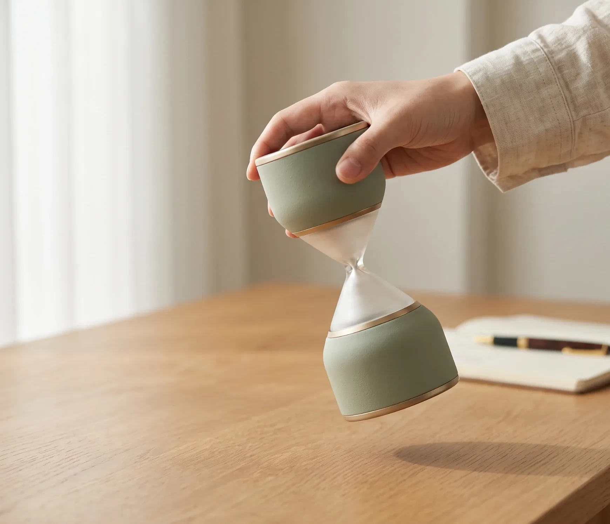
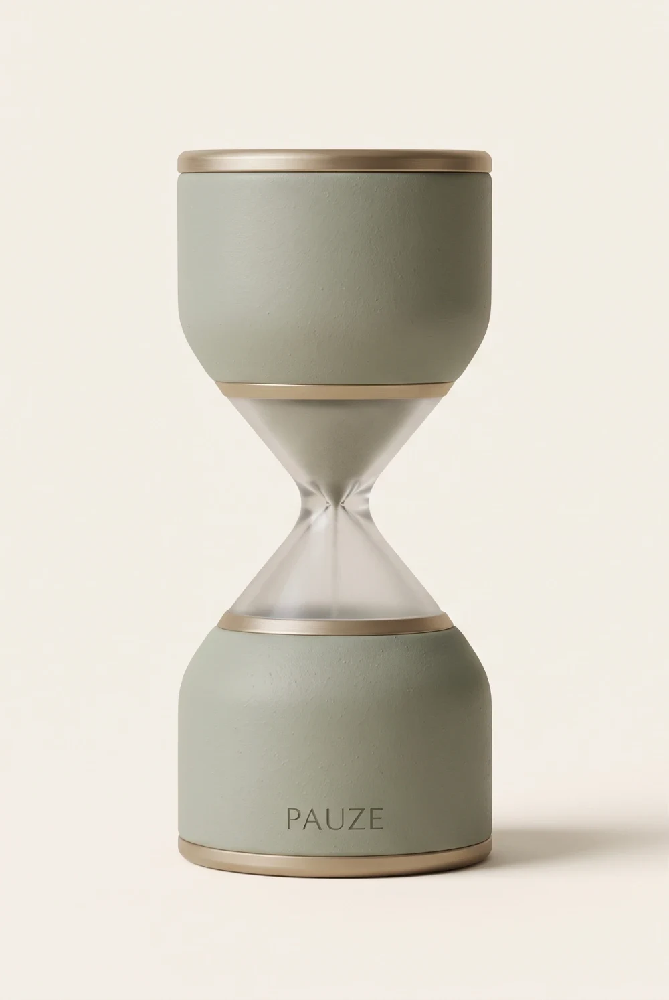
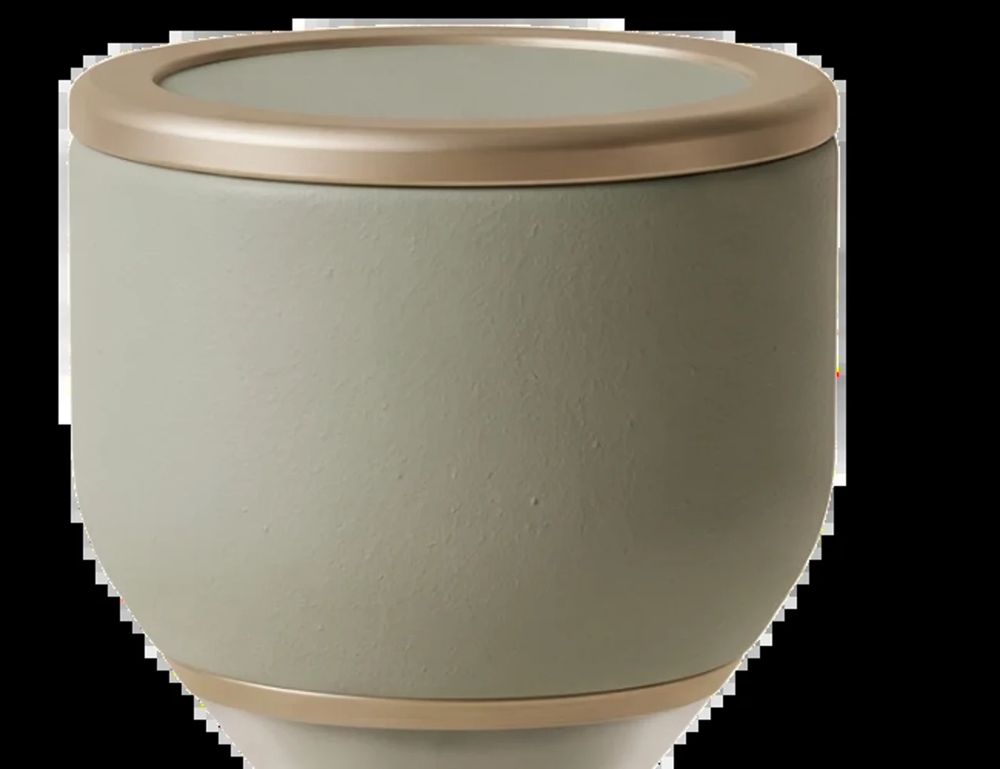
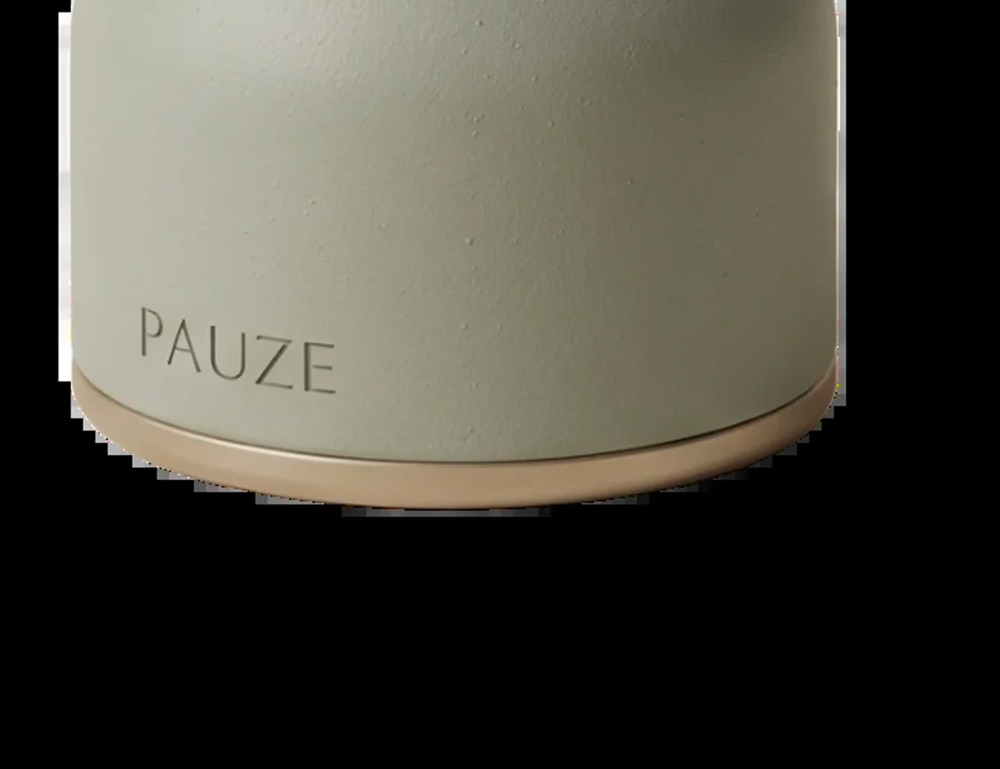
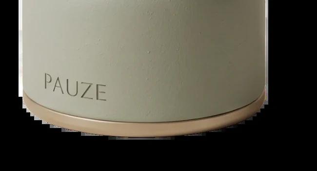
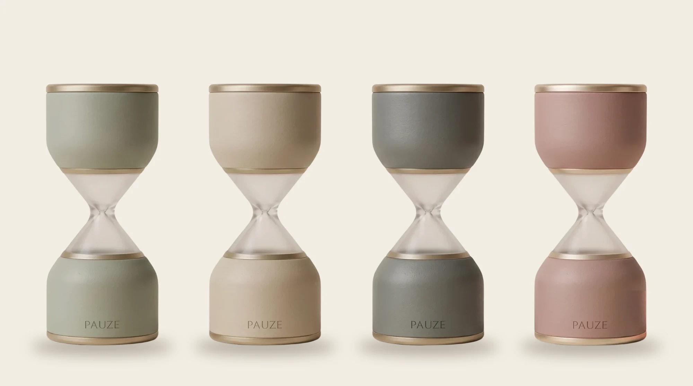

07:30 — Morning
공부를 시작하는 아침
스마트폰을 여는 대신, 뒤집는 것으로 몰입을 시작합니다.
Scentglass by PAUZE
잠시,
향에 머물다.
향을 켜는 대신,
나만의 순간을 시작하세요.
Make Room for Yourself
해야 할 일과 생각이 끊이지 않는 하루. 잠깐 멈춰 향을 느끼는 것만으로도 일상의 리듬은 조금 달라질 수 있습니다.
Brand Film오일 세 방울, 한 번의 뒤집기, 나만의 오후.
How to use
제품 상단의 캡을 열고 전용 오일 주입구를 확인합니다.
전용 스포이드로 오일을 천천히 주입합니다. 초기 시제품 테스트는 3방울을 기준으로 진행합니다.
주입구 주변을 깨끗이 닦고 캡을 단단히 닫아주세요.
천천히 뒤집어 향과 함께하는 나만의 시간을 시작합니다.
향을 그만 즐기고 싶을 땐 한 번 더 뒤집어 주세요. 더 이상 향이 나오지 않아요.

A Moment, Just for You
Find Your Moment
Inside Scentglass
Designed to Pause
시간을 재촉하는 기계가 아닌, 잠시 머물고 싶은 순간을 위한 디자인. 차분한 모래시계 실루엣과 무광 질감, 은은한 샴페인 브라스가 어느 공간에도 자연스럽게 놓입니다.






Daily Moments
스마트폰을 여는 대신, 뒤집는 것으로 몰입을 시작합니다.

한 챕터만큼의 시간, 향과 함께 천천히 머무릅니다.

일기를 쓰며, 오늘의 몰입에 조용히 끝을 냅니다.
Signature Scent
Quiet clarity, in every moment.
맑은 차 향과 산뜻한 시트러스, 부드러운 나무 향이 조화를 이루는 PAUZE의 시그니처 향.
그린티 · 베르가못 · 시더우드
복잡한 생각을 잠시 내려놓고 싶은 아침, 집중이 필요한 책상 앞, 조용히 나에게 돌아오고 싶은 순간에 어울립니다.
시그니처 오일 보기 →Specification
도자기 및 수공예 유리 공정 특성상 ±1~3mm의 미세한 크기 차이나 유약 흐름이 있을 수 있습니다.
Launching Offer
지금 PAUZE를 가장 먼저 만나보세요.
센트글라스를 한 번 더 뒤집어 주세요. 뒤집으면 향이 시작되고, 다시 뒤집으면 향이 더 이상 나오지 않아요.
네. 센트글라스는 배터리나 충전 없이, 뒤집는 동작만으로 사용하는 무전원 아날로그 오브제입니다.
발향 시간과 강도는 향료 종류, 온도, 공기 흐름에 따라 달라질 수 있습니다. 정확한 작동 시간은 검증 후 안내드립니다.
스타터 세트에 포함된 PAUZE 시그니처 오일(10ml)을 권장하며, 오일은 단품으로도 구매하실 수 있습니다.
도자기 및 수공예 유리 공정 특성상 ±1~3mm의 미세한 크기 차이나 유약 흐름이 있을 수 있습니다. 하나하나의 개성으로 봐주세요.
결제 완료 후 영업일 기준 2–4일 내 출고됩니다. 5만원 이상 구매 시 무료배송입니다.

Make Room for Yourself
모든 순간을 더 효율적으로 보내야 하는 건 아니니까요.
때로는 향을 느끼고, 잠깐 숨을 고르고,
아무것도 서두르지 않는 시간이 필요합니다.